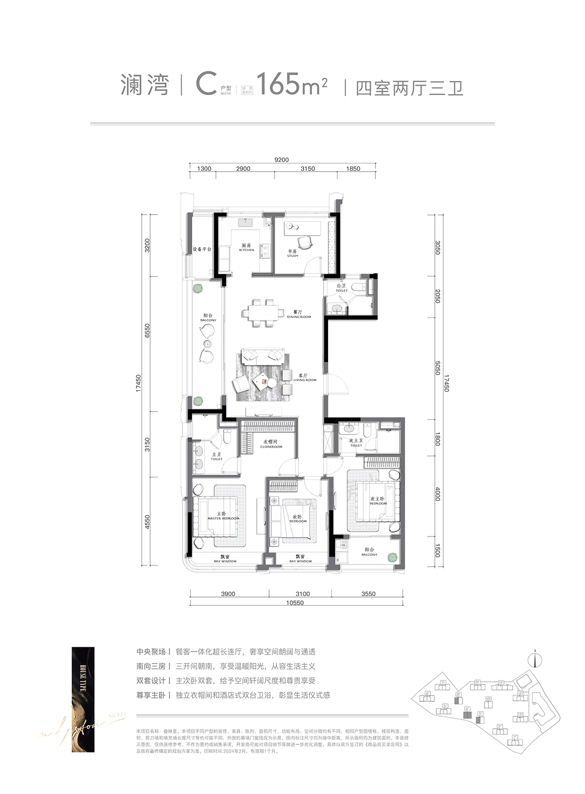
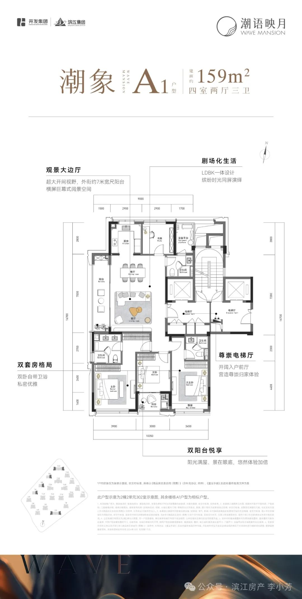
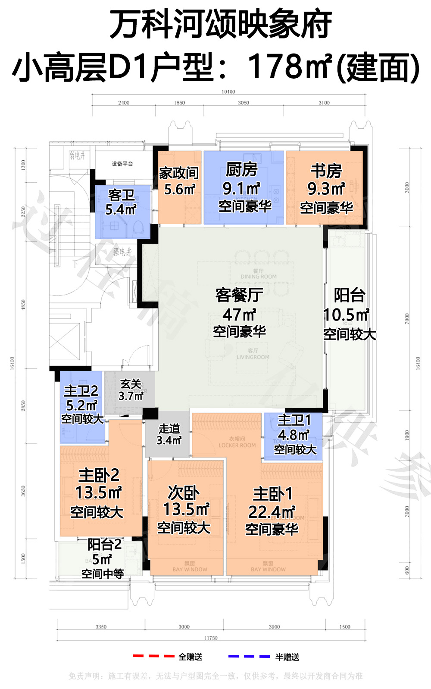
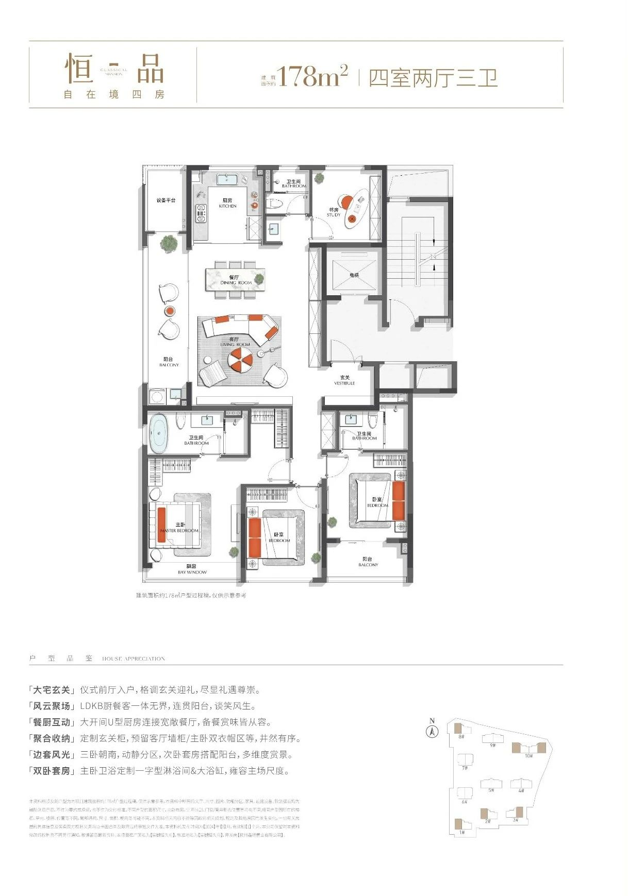
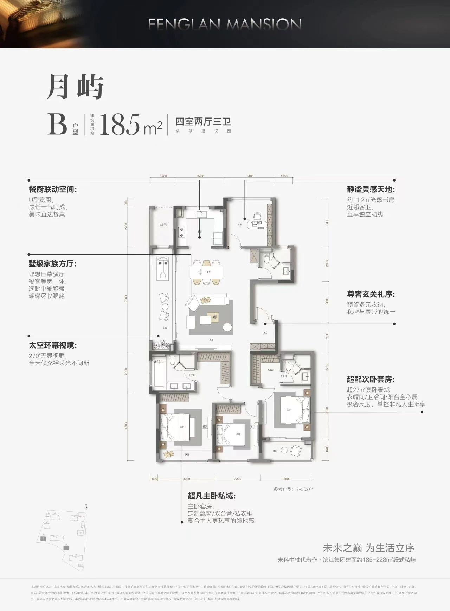
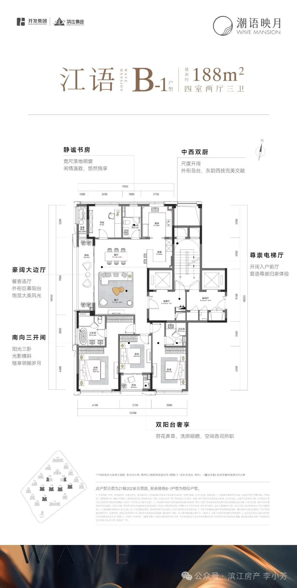
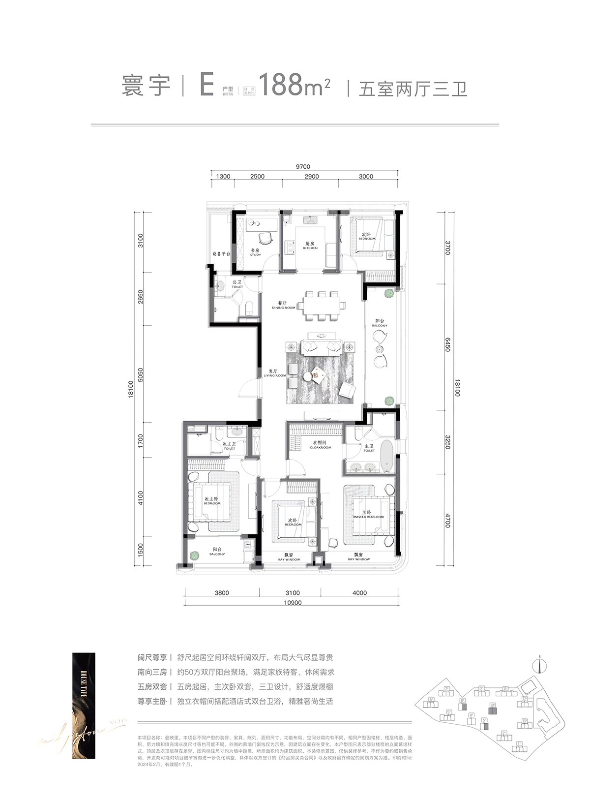

先说结论（第二版，2026-11-03）
- 事实共 16 例户型图，另附 1 张用户参考图：A 7 例，B 0 例（只有用户参考），C 4 例，D 5 例。C/D 全部在杭州，全部是纵向北厅：客餐厅沿进深南北排在北半区、一体贯通，侧面开阳台，三卧朝南。
- 事实楼梯（第三版）：C1、C3、C4、D1、D2、D4 的户型图上画了核心筒，都是单楼梯，不是剪刀梯。C2、D3、D5 的图上没画核心筒，楼高 11–17F（≤54m），推断按规范应该是单楼梯，标了“需核实”。层数可能超过 18F、楼梯又核实不了的，都已经剔除。
- 推断纵向北厅的北立面一般是厨房和书房。龙游要朝北看衢江，建议可以把厨房挪到侧边或做成开放西厨，让餐厅贴到北窗。
- 事实B 组（南向客餐一体横厅、≥15m）还没找到有图、又符合条件的案例，暂时只放用户参考图。
- 事实有出处的得房率：A7 89%/82%、D1 89%/82%（含赠送/不含赠送，看房网口径）。其余都写未知，没有编数字。
| 编号 | 项目 · 户型 | 地区 | 面积 | 层数 |
|---|---|---|---|---|
| A1 | 建发·云涌之江 C1-129 | 杭州 | 约129㎡ 四房两卫 | 未核实未查到该楼栋层数；全盘容积率 2.2 |
| A2 | 滨江·棠悦芳华轩 E-128 | 杭州 | 约128㎡ 四房两卫 | 事实全盘 12–16F（看房网）；推断约 50m 以下 |
| A3 | 海威绿城·月咏和风 A-127 | 杭州 | 约127㎡ 四房两卫 | 未核实未查到层数；全盘容积率 2.8，推断会有超 54m 的 |
| A4 | 和萃揽悦园 D-125「锦和」 | 杭州 | 约125㎡ 四房两卫 | 未核实未查到层数（容积率 2.5） |
| A5 | 绿城运河·宸岸新月府 126 | 杭州 | 约126㎡ 四房两卫 | 事实全盘 14–17F（看房网） |
| A6 | 建杭·璞御栖湖 B-127「璞澜」 | 杭州 | 约127㎡ 四房两卫 | 事实全盘 14–17F（看房网） |
| A7 | 绿城·玉海棠里 小高层 D2-129（对照） | 杭州 | 约129㎡ 四房两卫 | 事实9–11 层小高层（看房网） |
| C1 | 绿城·咏湖雲庐 B-170「轻裘」 | 杭州 | 约170㎡ 四房三卫 | 事实14–16F（购房通） |
| C2 | 滨江·叠映里 C-165「澜湾」 | 杭州 | 约165㎡ 四房三卫 | 事实11–15F（看房网） |
| C3 | 绿城·玉海棠里 E-169「浅云」 | 杭州 | 约169㎡ 四房三卫 | 事实9–11 层小高层（看房网） |
| D1 | 万科·河颂映象府 小高层 D1-178 | 杭州 | 约178㎡ 四房三卫 | 事实4/5/6 幢小高层 9–10F（看房网） |
| D2 | 西房·宸樾恒久府 A2-178「恒品」 | 杭州 | 约178㎡ 四房三卫 | 事实14 / 17 层（凤凰网） |
| D3 | 滨江杭铁·枫揽华庭 B-185「月屿」 | 杭州 | 约185㎡ 四房三卫 | 事实12–17F（看房网） |
| D4 | 滨江 & 开发·潮语映月轩 B-1-188「江语」 | 杭州 | 约188㎡ 四房三卫 | 事实12–15F（看房网） |
| D5 | 滨江·叠映里 E-188「寰宇」 | 杭州 | 约188㎡ 五房三卫 | 事实11–15F |
| C4 | 滨江 & 开发·潮语映月轩 A1-159「潮象」（略小于 165，按纵向北厅收） | 杭州 | 约159㎡ 四房三卫 | 事实12–15F（看房网） |
A 组 · ≤130㎡ 四开间朝南（7 例）
未改动。有出处的四开间只有 A1；A2–A6 看图判断；A7 是三开间，只作高得房率对照。
A1 · 建发·云涌之江 C1-129（杭州 西湖区·之江）
| 开发商 | 建发 & 之江城投 | 面积 | 约129㎡ 四房两卫 |
|---|---|---|---|
| 入市 | 事实2025-04-20 开盘（吉屋） | ||
| 面宽/开间 | 事实四开间朝南，南向面宽约 13.4m（图注 + 吉屋） | ||
| 楼高/层数 | 未核实未查到该楼栋层数；全盘容积率 2.2 | ||
| 梯户/核心筒 | 事实129㎡ 为两梯两户（吉屋） | ||
| 赠送/得房率 | 未知未公开 | ||
北厅位置与一体化：LDKB 一体；套房主卧；入户储藏间。

A2 · 滨江·棠悦芳华轩 E-128（杭州 拱墅区）
| 开发商 | 滨江 | 面积 | 约128㎡ 四房两卫 |
|---|---|---|---|
| 入市 | 推断约 2025（交房 2027-12） | ||
| 面宽/开间 | 推断看图是四开间朝南（三卧 + 客厅） | ||
| 楼高/层数 | 事实全盘 12–16F（看房网）；推断约 50m 以下 | ||
| 梯户/核心筒 | 未核实 | ||
| 赠送/得房率 | 未知未公开 | ||
北厅位置与一体化：LDK 一体；南向四开间。

A3 · 海威绿城·月咏和风 A-127（杭州 萧山区·宁围/滨康）
| 开发商 | 海威 & 绿城 | 面积 | 约127㎡ 四房两卫 |
|---|---|---|---|
| 入市 | 推断2024–25 | ||
| 面宽/开间 | 推断看图是四开间朝南 | ||
| 楼高/层数 | 未核实未查到层数；全盘容积率 2.8，推断会有超 54m 的楼 | ||
| 梯户/核心筒 | 未核实 | ||
| 赠送/得房率 | 未知未公开 | ||
北厅位置与一体化：LDK 一体；U 型厨房；全明。

A4 · 和萃揽悦园 D-125「锦和」（杭州 余杭区·勾庄）
| 开发商 | 建发系（杭州建余） | 面积 | 约125㎡ 四房两卫 |
|---|---|---|---|
| 入市 | 推断2024–25 | ||
| 面宽/开间 | 事实125 有“南向客厅”和“侧边客厅”两版（看房网问答）；推断看图像四开间 | ||
| 楼高/层数 | 未核实未查到层数（容积率 2.5） | ||
| 梯户/核心筒 | 未核实 | ||
| 赠送/得房率 | 未知未公开 | ||
北厅位置与一体化：客厅朝南；南北双阳台。

A5 · 绿城运河·宸岸新月府 126（杭州 拱墅区·运河）
| 开发商 | 绿城 | 面积 | 约126㎡ 四房两卫 |
|---|---|---|---|
| 入市 | 推断约 2025（交房 2027-06） | ||
| 面宽/开间 | 推断图注写“三大阳光房”，客厅加三个朝南房间，四开间有待核对 | ||
| 楼高/层数 | 事实全盘 14–17F（看房网） | ||
| 梯户/核心筒 | 未核实 | ||
| 赠送/得房率 | 未知未公开 | ||
北厅位置与一体化：一字型客餐厨；双阳台；外向型客厅收纳墙。

A6 · 建杭·璞御栖湖 B-127「璞澜」（杭州 西湖区·双浦）
| 开发商 | 建杭（杭州建浦） | 面积 | 约127㎡ 四房两卫 |
|---|---|---|---|
| 入市 | 推断2024–25 | ||
| 面宽/开间 | 未核实看图三到四开间，待核对 | ||
| 楼高/层数 | 事实全盘 14–17F（看房网） | ||
| 梯户/核心筒 | 未核实 | ||
| 赠送/得房率 | 未知未公开 | ||
北厅位置与一体化：一体化大横厅；精装品牌配置。


B 组 · 约140–155㎡ 南向客餐一体横厅（0 例）
用户参考（约 14m）
推断按图：南向面宽约 14m，主卧 3.8m + 卧室 3.2m + 横厅 7.0m，客厅和餐厅都在南侧，一体横厅；书房、厨房、入户、卫生间在北侧；两梯两户核心筒。目标是 ≥15m 的南向客餐一体横厅，约 140–155㎡。14m 只作保底。

本组暂缺：没找到有图、符合条件的案例
事实看房网 2024–26 年 140–156㎡ 的有图户型都看过了（咏湖 A1/A2、缤曜 B、璞云 C/D、河颂 C-144、沁百合 155、宸岸印月里 C-140、沐云川 145），都是南客厅 + 北餐厅的纵厅，或者边厅，没有南向客餐一体横厅。其中宸岸印月里 C-140 面宽约 14.65m、四开间，但仍是纵厅；云湖之城 D1-159 面宽约 15.1m，也是纵厅。横厅线索：咏舟府（16m 横厅，15–26F，超高）、建发云启之江 139（约 16.2m 南横厅，2023 年已售罄，小于 140）、云启钱湾 146（大横厅，面宽和层数未知）。下一步要拿到这些项目的楼栋层数和户型图。
170 vs 180 级配差（纵向北厅，按图归纳，推断）
| 项 | 约 170（C 组） | 约 180（D 组） |
|---|---|---|
| 南向 | 三卧朝南 | 三卧朝南（D5 多一间北卧，共五房） |
| 北厅尺度 | 客餐一体约 35–45㎡（按图估） | D1 47㎡、D5 约 50㎡ |
| 厨房 | U 厨或一字厨，C1 有岛台 | D4 中西双厨 + 岛台，D3 U 厨 + 餐客等宽 |
| 卫生间 | 三卫 | 三卫 |
| 北厅进深 | 约 6.5–7.35m（C1、C2） | 约 6.45–7.0m，但面宽更大（D1、D5） |
| 多出的功能 | 北侧书房 | 独立书房（D4）、第五房（D5）、家政间（D1） |
| 面宽 | 约 9.2–10.5m（C2、C4 按图） | 约 9.7–11.75m（D1、D4、D5 按图） |
建议做龙游级配时，180 比 170 至少要多一项实在的东西：中西双厨/岛台、一间独立书房或家政，或者厅宽多一个开间。只靠放大面积不够。
C 组 · 约165–175㎡ 纵向北厅 · 客餐一体 · 单楼梯（4 例）
第三版：只收纵向北厅（客餐厅沿进深南北排在北半区、一体贯通、朝北景），不收剪刀梯。原 C4 锦绣里（层数未知）和两例横向真北厅（湖翠里、春风金沙，层数和楼梯都核实不了）已剔除。杭州 2024–26 年 ≤18F、165–175㎡ 的纵向北厅只找到 3 例，所以补了 1 例 159㎡（C4）。
C1 · 绿城·咏湖雲庐 B-170「轻裘」（杭州 滨江区·白马湖）
| 开发商 | 绿城 & 建杭 | 面积 | 约170㎡ 四房三卫 |
|---|---|---|---|
| 入市 | 事实2025 二开 | ||
| 面宽/开间 | 事实约 7.35m 大方厅（新房网） | ||
| 楼高/层数 | 事实14–16F（购房通） | ||
| 梯户/核心筒 | 事实类一梯一户（两梯两户做独立梯厅） 楼梯：事实按图：核心筒为 单楼梯 + 电梯（非剪刀梯）；14–16F | ||
| 赠送/得房率 | 未知未公开 | ||
北厅位置与一体化：【纵向北厅】推断按图：餐厅在北中部，客厅在进深中段、东侧飘窗；U 厨 + 岛台 + 餐 + 客连成一条；北立面是厨房和书房；三卧朝南。

C2 · 滨江·叠映里 C-165「澜湾」（杭州 上城区·城东新城）
| 开发商 | 滨江 & 中豪 | 面积 | 约165㎡ 四房三卫 |
|---|---|---|---|
| 入市 | 事实2024-01 首开（杭州网） | ||
| 面宽/开间 | 推断北侧面宽约 9.2m（图注尺寸） | ||
| 楼高/层数 | 事实11–15F（看房网） | ||
| 梯户/核心筒 | 事实全盘两梯两户（杭州网） 楼梯：未核实户型图没画核心筒；楼高 11–15F（≤54m），推断按规范应为单楼梯，需向售楼处核实 | ||
| 赠送/得房率 | 未知未公开 | ||
北厅位置与一体化：【纵向北厅】推断按图：餐厅 + 客厅在北/中部做成客餐一体长连厅，西侧阳台；三卧朝南。

C3 · 绿城·玉海棠里 E-169「浅云」（杭州 余杭区·良渚）
| 开发商 | 绿城 | 面积 | 约169㎡ 四房三卫 |
|---|---|---|---|
| 入市 | 事实2023–24 | ||
| 面宽/开间 | 未核实图上面宽未读出 | ||
| 楼高/层数 | 事实9–11 层小高层（看房网） | ||
| 梯户/核心筒 | 事实两梯两户板式（搜狐） 楼梯：事实按图：单楼梯（双跑）+ 电梯；9–11F | ||
| 赠送/得房率 | 未知未公开 | ||
北厅位置与一体化：【纵向北厅】推断按图：客厅 + 餐厅 + 阳台一体放在北侧偏西半区；卧室朝南。层数最贴近龙游 54m 以下。

C4 · 滨江 & 开发·潮语映月轩 A1-159「潮象」（略小于 165，按纵向北厅收）（杭州 杭州）
| 开发商 | 开发 & 滨江 | 面积 | 约159㎡ 四房三卫 |
|---|---|---|---|
| 入市 | 事实2024-10 示范区开放 | ||
| 面宽/开间 | 推断按图面宽约 10.5m，南向三开间 | ||
| 楼高/层数 | 事实12–15F（看房网） | ||
| 梯户/核心筒 | 事实两梯两户（看房网） 楼梯：事实按图：两部电梯 + 单楼梯；12–15F | ||
| 赠送/得房率 | 未知未公开 | ||
北厅位置与一体化：【纵向北厅】推断按图：LDBK 一体“观景大边厅”在北半区，餐厅在北、客厅在中，西侧 7m 宽阳台；三卧朝南。

D 组 · 约175–190㎡ 纵向北厅 · 客餐一体 · 单楼梯（5 例）
D1–D5 都是杭州的纵向北厅。温州望江 185A/B 是横向北厅，层数和楼梯核实不了，已剔除。每例都写了比 170 多出什么。
D1 · 万科·河颂映象府 小高层 D1-178（杭州 拱墅区·申花）
| 开发商 | 万科 | 面积 | 约178㎡ 四房三卫 |
|---|---|---|---|
| 入市 | 事实2023-12 开盘（看房网） | ||
| 面宽/开间 | 推断按图面宽约 11.75m | ||
| 楼高/层数 | 事实4/5/6 幢小高层 9–10F（看房网） | ||
| 梯户/核心筒 | 未核实 楼梯：事实按图：单楼梯 + 电梯；9–10F | ||
| 赠送/得房率 | 事实含赠送 89%，不含赠送 82%（看房网测评） | ||
北厅位置与一体化：【纵向北厅】推断按图：客餐厅 47㎡ 一体在北中部，东侧 10.5㎡ 阳台；厨房、书房贴北；三卧朝南。比 170 多：厅更大（47㎡）、阳台更大、多一间家政/储藏。

D2 · 西房·宸樾恒久府 A2-178「恒品」（杭州 拱墅区·长浜路）
| 开发商 | 西房 | 面积 | 约178㎡ 四房三卫 |
|---|---|---|---|
| 入市 | 推断约 2024-08 入市（凤凰网） | ||
| 面宽/开间 | 未核实图上面宽未读出 | ||
| 楼高/层数 | 事实14 / 17 层（凤凰网） | ||
| 梯户/核心筒 | 未核实宣传“类一梯一户” 楼梯：事实按图：单楼梯（双跑）+ 电梯；14/17F | ||
| 赠送/得房率 | 未知未公开 | ||
北厅位置与一体化：【纵向北厅】推断按图：餐厅 + 客厅在北半区做成 LDKB，西侧阳台；三卧朝南。同盘 A1 是南厅版，已剔除。比 170 多：LDKB 带阳台连成一体，进深更大。

D3 · 滨江杭铁·枫揽华庭 B-185「月屿」（杭州 余杭区·未来科技城）
| 开发商 | 滨江 & 杭铁 | 面积 | 约185㎡ 四房三卫 |
|---|---|---|---|
| 入市 | 事实2024 预售（看房网） | ||
| 面宽/开间 | 未核实图上面宽未读出 | ||
| 楼高/层数 | 事实12–17F（看房网） | ||
| 梯户/核心筒 | 事实两梯两户（看房网） 楼梯：未核实户型图没画核心筒；12–17F（≤54m），推断按规范应为单楼梯，需核实 | ||
| 赠送/得房率 | 未核实只有“高得房率”的宣传 | ||
北厅位置与一体化：【纵向北厅】推断按图：餐厅与客厅等宽一体在北半区，西侧阳台，U 型厨房；卧室朝南。比 170 多：U 厨 + 餐客等宽，厨餐更大。

D4 · 滨江 & 开发·潮语映月轩 B-1-188「江语」（杭州 杭州）
| 开发商 | 开发 & 滨江 | 面积 | 约188㎡ 四房三卫 |
|---|---|---|---|
| 入市 | 事实2024-10 示范区开放 | ||
| 面宽/开间 | 推断按图南向三开间，面宽约 10.8m | ||
| 楼高/层数 | 事实12–15F（看房网） | ||
| 梯户/核心筒 | 事实两梯两户（看房网） 楼梯：事实按图：两部电梯 + 单楼梯；12–15F | ||
| 赠送/得房率 | 未知未公开 | ||
北厅位置与一体化：【纵向北厅】推断按图：“豪阔大边厅”餐客厅一体在北半区，西侧巨幕阳台；北侧中西双厨 + 岛台，书房贴北；三卧朝南。比 170 多：中西双厨/岛台、独立书房。

D5 · 滨江·叠映里 E-188「寰宇」（杭州 上城区·城东新城）
| 开发商 | 滨江 & 中豪 | 面积 | 约188㎡ 五房三卫 |
|---|---|---|---|
| 入市 | 事实2024 | ||
| 面宽/开间 | 未核实图上面宽未读出 | ||
| 楼高/层数 | 事实11–15F | ||
| 梯户/核心筒 | 事实两梯两户 楼梯：未核实户型图没画核心筒；11–15F，推断应为单楼梯，需核实 | ||
| 赠送/得房率 | 未知未公开 | ||
北厅位置与一体化：【纵向北厅】推断按图：约 50㎡ 双厅（客 + 餐）在北中部，东侧阳台；三卧朝南。比 170 多：多一房（五房）、厅约 50㎡。

本版剔除（第二版）
- 推断C 组剔除 5 例（按图是南厅，北侧只有餐厅或只是看得到北景）：璟逸 B2-170、璟逸 B1-170、叠映里 D-167、璞御栖湖 E-169、宸鹭弦歌里 175。
- 推断D 组剔除 4 例（南厅）：恒久府 A1-178（南向 16m 四开间，是南厅版）、棠月映翠 B-177、映翠湾 E-183、拱宸金茂府 A-185。
- 推断B 组剔除 5 例（不是南向客餐一体横厅）：咏湖 A2-148（14.2m，南客厅 + 北餐厅纵厅）、咏湖 A1-146（北/西侧边厅）、缤曜 B-142（14.0m，纵向客餐厅）、璞云 C-144（南客厅、北餐厅）、璞云 D-152（西厅）。
- 推断新查的也剔除（南厅）：桂月云翠园 C-172、宸岸印月里 F-175、枫揽华庭 A-189、望云璟晨府 C-176、潮语映月轩 B-188「澄映」、璟逸 C1-190、锦绣里 E1-169（北侧只有餐厅）、御湖境 168。
- 事实第三版剔除（不收剪刀梯，或楼梯核实不了）：锦绣里 E2-169（层数未知，图上没画核心筒）、湖翠里 D-166（可能超过 18F，楼梯未核实）、春风金沙 D-165（层数和楼梯未核实）、温州望江 185A/185B（层数和楼梯未核实）。也看过云诵桂月轩 K-170（17/25/26F，超高）和华昭府洋房 A-180/A2-178/B-185（5–11F，但客厅朝南），都没收。
- 未核实待核的边缘案例：河颂 D2-174，布局和 D1 相同（北区纵厅），但在 9–23F 的高层楼栋里，层数没确认，暂不收。
线索 · 口径
- 事实华润·沄璟文华轩 145/178：14–18F，两梯两户，145 横向面宽 14.4m（杭州网）。没拿到图，厅的方向没核对。
- 事实其他超过 18F 被剔除的盘（朗拾湖著、锦海棠、绿汀春晓、御湖境、云咏明月等）见第一版的说明，结论不变。
- 北厅分类、面宽、厅的面积，凡是标“推断”的，都是按户型图读的。图都是开发商物料的转载，带水印。